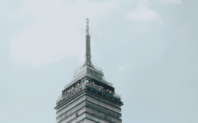
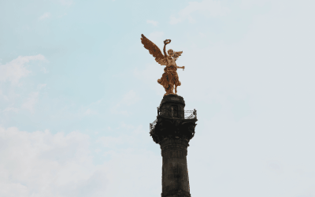

Travel
Although I love to Travel I have not gotten the chance to travel as much as I have would've hoped by the age of 20. However two summers ago I got the oppertunity to travel outside of the country for the first time and I absolutley loved it. During the summer of 2019 I traveled to Mexico for the first time. Since traveling there it has become my home away from home. While in Mexico I got two visit three states. These states included Monterrey, El Estado de Mexico y La Cuidad de Mexico which is also the capital. As a city person I feel in love with La Cuidad de Mexico. There was so much to see and do. Not only that but there was also so many historical landmarks that I had only ever seen in films. This included The Angel of Independence and the Lantin Anerican Tower which are both pictured below.

